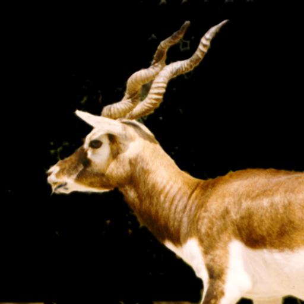
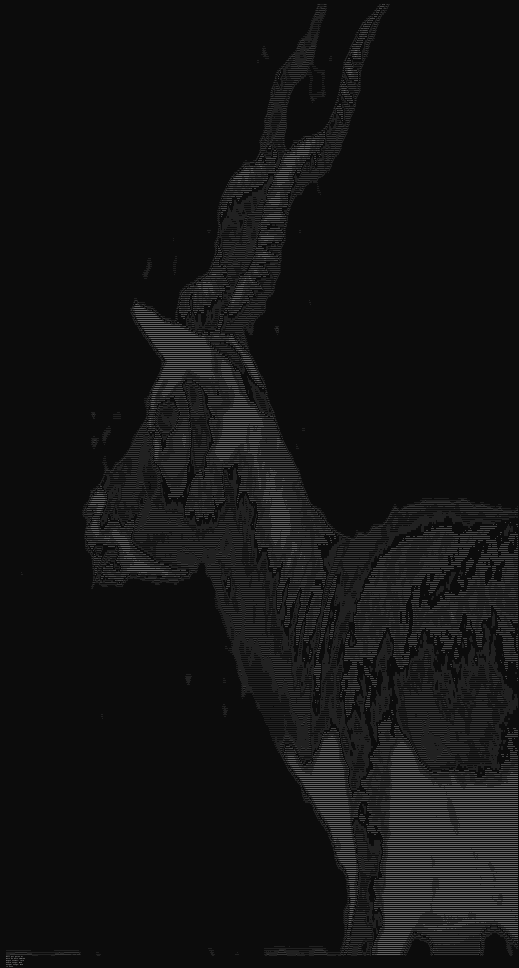

C / Afbeeldingen
BMP naar ASCII Art
Een tool waarmee BMP-afbeeldingen worden ingelezen en omgezet naar ASCII art. Het project combineert bestandsverwerking, het uitlezen van pixels en tekstuele visualisatie in een compacte toepassing.


Wat het project doet
De applicatie leest een BMP-bestand in, verwerkt de pixelinformatie en zet helderheid om naar ASCII-tekens. Zo ontstaat een tekstuele versie van de afbeelding die in de terminal of als tekstbestand kan worden bekeken en gedeeld.
Waarom dit interessant was
Dit project gaf mij meer inzicht in hoe afbeeldingen intern worden opgebouwd. Door zelf met BMP-data te werken, werden bestandsstructuur, byteverwerking en eenvoudige beeldanalyse veel concreter en makkelijker te begrijpen.